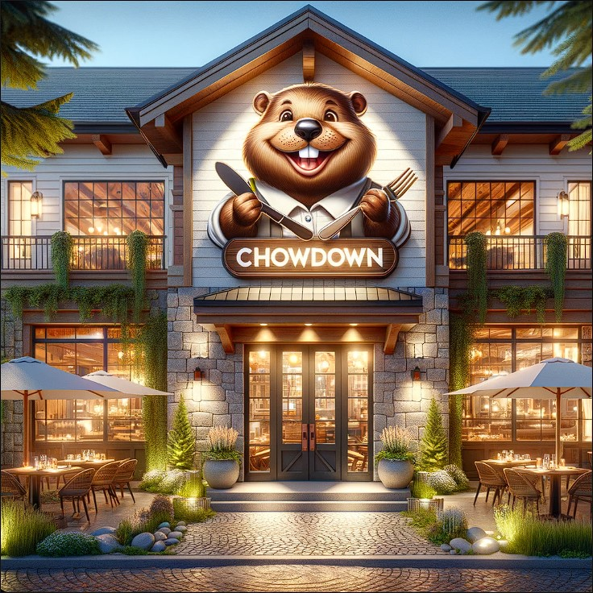

Welcome to Our Food Chain Management System
Our system tracks and records the specific needs of each of our restaurants, detailing the usage of over 2000 different ingredients sourced from more than 300 suppliers. This ensures that each restaurant receives the exact ingredients necessary to create every dish, enhancing the consistency and quality of our dishes, aiming to reduce waste by 20% and increase customer satisfaction.
Features
- Comprehensive database tracking of menus, ingredients, and supplier relationships.
- Efficient management of day-to-day operations across all locations.
- Advanced analytics for waste reduction and quality improvement.